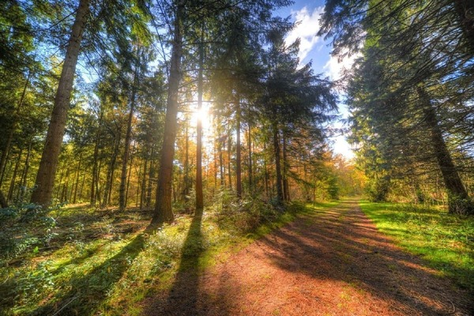

Bosques Templados
Son comunidades de árboles altos, principalmente pinos y encinos, así como varias otras especies que viven en climas montañosos templados a fríos. El 50% de los pinos del mundo y alrededor del 33% de los robles crecen en México.
